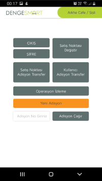
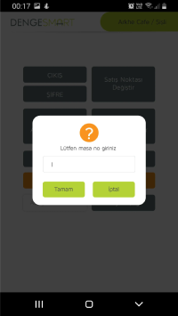
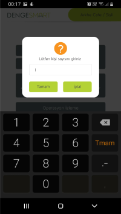
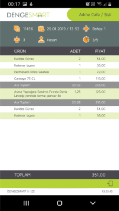
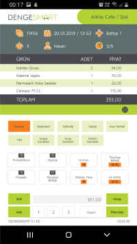

  <!-- <owl-carousel-o [options]="customOptions">
  <ng-template carouselSlide [width]=200 [height]=355></ng-template>  
  <ng-template carouselSlide [width]=200 [height]=355></ng-template> 
  <ng-template carouselSlide [width]=200 [height]=355></ng-template>
  <ng-template carouselSlide [width]=200 [height]=355></ng-template>
  <ng-template carouselSlide [width]=200 [height]=355></ng-template>
  
</owl-carousel-o> -->

<div class="container">
  <owl-carousel [options]="homeSlider" [carouselClasses]="['owl-theme', 'customClassName']">
    <div class="item"></div>
    <div class="item"></div>
    <div class="item"></div>
  </owl-carousel>
</div>
